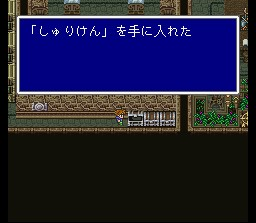
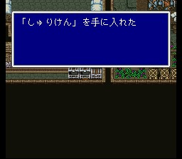
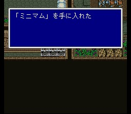

멸망한 마을
마을에 들어가면 온통 폐허가 된 집들 뿐입니다. 여러 집들을 돌아다니다 보면 타이쿤왕이 여기저기서 나타납니다. 그를 계속 쫓아다니다 보면 북쪽 계단 위에 있는 집으로 타이쿤왕이 우리를 유인하듯이 움직이고 따라가면 함정에 빠집니다.
타이쿤왕을 보고 파리스는 아버지라고 부르고, 비로소 레나와 파리스의 관계가 확실히 밝혀집니다. 한편 가라프는 다른 세 사람과 다른 곳에 떨어져 잠시 헤매지만 금방 합류하고, 나갈 길을 찾다 보면 워프존에 도달합니다.
워프하고 나면 초승달섬 아래로 이동하는 것을 볼 수 있고, 한편 시드와 미드는 흑초코보를 타고 초승달섬 숲으로 와서 흑초코보를 돌려 보냅니다.
여기서.. 밖으로 나가기 전에 아래로 내려가면 숙소가 있으니 필요하면 쓰시고, 왼쪽 방의 스위치를 조사하다 보면 여기저기 똥개훈련을 당하다가 바보 취급까지 당하지만 수리검과 백마법 미니멈을 챙길 수 있습니다.
이제 밖으로 나가면 시드와 미드가 갑자기 땅속으로 떨어지고, 일행은 가라앉았던 화력선을 지나 비공정에서 시드와 미드를 만납니다. 시드와 미드는 비공정을 다시 작동할 수 있도록 고치는데, 비공정과 같이 봉인된 듯한 마물이 따라옵니다.
이번 보스 크레이크로는 전기에 약하니, 번개의 술을 던지거나 전격계열 마법을 쓰면 금방입니다. 그리고 산호의 검을 갖고 있는데 훔치기 어렵지 않습니다. 자콜에서 팔고 있긴 합니다만.. 증식해서 팔면 이스토리에서 반지 두 개는 살 수 있지요.
이제 비공정을 타고 다닐 수 있게 되었습니다. 못가는 곳 없는 최강의 이동수단입니다. 바다에 내려앉으면 화력선처럼 항해도 할 수 있습니다. 다만 사막이나 숲에는 착륙을 못하는 것이 옥에 티입니다만. 하지만 제1세계에서는 비공정으로 못 가는 곳은 없습니다. 어디든 가서 못해놓은 일이나 살 아이템이 있다면 할 일을 해놓으십시오.
멸망한 마을 주위를 지나가 보시면 마을이 하늘로 떠오르는 것을 볼 수 있습니다. 그것을 보고 나서 비공정 기지로 가서 시드, 미드와 상의합시다.
비공정 기지
릭스
고대도서관
월스성
월스마을
타이쿤성
이스토리
칼낙
자콜
툴
해적의
동굴
바람의 신전
배들의
묘지
북의 산
카웬
크레센트
유사의
사막
타이쿤 운석
월스
운석
칼낙 운석